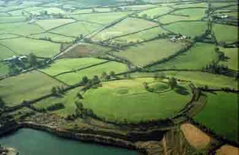
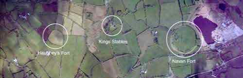

Форт Наван (Navan Fort) графство Арма (Armagh)
Немного к западу от города Armagh, на участке размером около восьми гектар
расположены останки форта Наван, увенчивающего собой вершину кургана. Рядом с
этим фортом расположены и останки других военных укреплений, возводившихся здесь
Ольстерскими королями, которые владели этими территориями в период с 350 годов
до н.э. и до 332 года н.э. Это место так же являлось домом легендарного Cu
Chulainn, одного из героев ольстерской мифологии.

